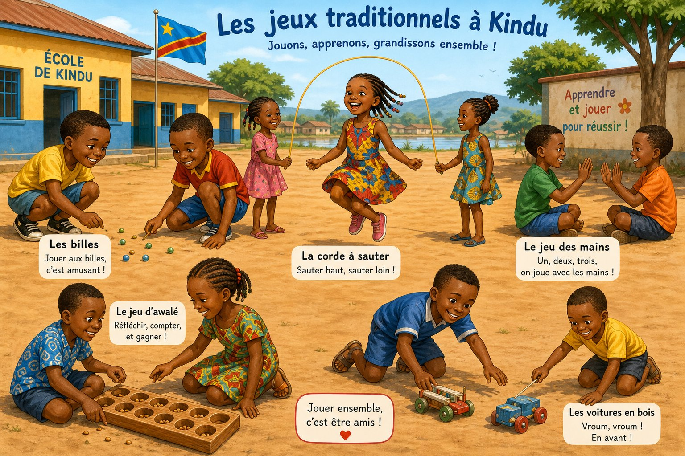

Même leçon "Se présenter", mais voix d'enfants, images d'enfants, scénario de jeux d'enfants. L'enfant ne voit pas un adulte au tribunal — il voit Kito et Aya qui jouent à la corde.

Scénario adapté : Kito (7 ans) et Aya (6 ans) jouent à la corde dans la cour de l'école à Kindu. Ils se présentent en sautant.
Enfants qui jouent, pas adultes au tribunal. Couleurs vives, visages joyeux.
Jeux d'enfants, comptines, histoire du petit lièvre — pas rapport d'accident.
Après avoir appris, les enfants chantent ensemble sur rythme tam-tam qui fait danser :
Paroles : "Un, deux, trois, je m'appelle Kito ! Tape des mains !"Quand l'enfant (ou son parent) choisit "Enfant 6-10 ans" à l'inscription, l'application change TOUTE seule :
Daniel, ce n'est plus une idée abstraite. C'est déjà là.
L'enfant de 7 ans qui n'a jamais parlé français va dire "Salut, je m'appelle Kito" le Jour 1, parce qu'il a vu Kito, entendu Kito, puis chanté avec Kito.
Voir version Adulte → Retour à l'app → Choisir Enfant/Adulte